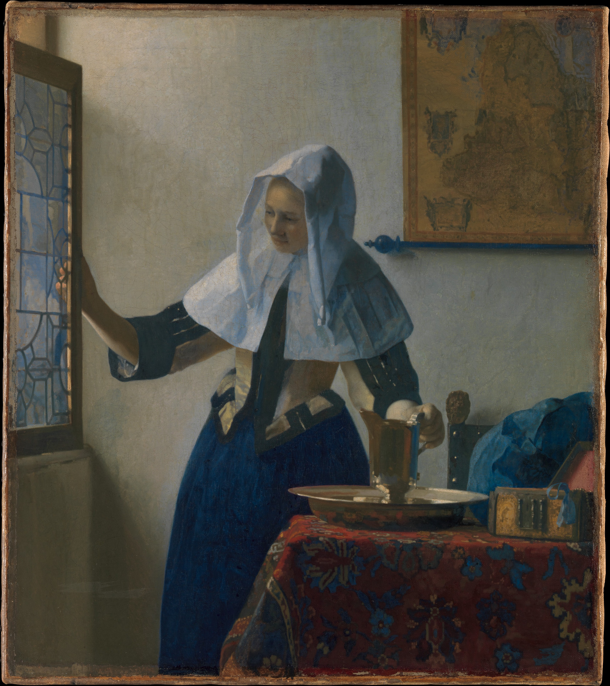

SHARE YOUR THOUGHTS
Every week, we post a new prompt about one of our paintings for our international community to engage in
meaningful creative discussion.
This week's prompt: How does Vermeer use light from the window to define the mood of the room, and how does the quality of light differ between the woman's collar and the surrounding walls?

user111: Vermeer uses the window’s soft, diffused light to create a peaceful, almost suspended moment. The woman’s collar catches brighter, more focused light, appearing crisp and luminous, while the walls are gently washed in softer, more even tones.
user222: The incoming light sets a calm, domestic mood by illuminating the scene without harsh contrast. The collar reflects light sharply, emphasizing texture, whereas the walls absorb it, appearing flatter and more subdued.
user 333: Light from the window gives the room a quiet, contemplative atmosphere. It defines the woman with clear highlights on her collar, while the surrounding walls receive a more diffused glow that recedes into the background.
user444: Vermeer’s window light creates a serene and intimate space. The collar appears almost radiant due to concentrated highlights, while the walls are softly lit, with gradual tonal transitions that minimize detail.
user555: The gentle daylight enhances the stillness of the scene. The woman’s collar stands out with brighter, sharper illumination, in contrast to the walls, where light is more dispersed and muted, supporting the calm mood.